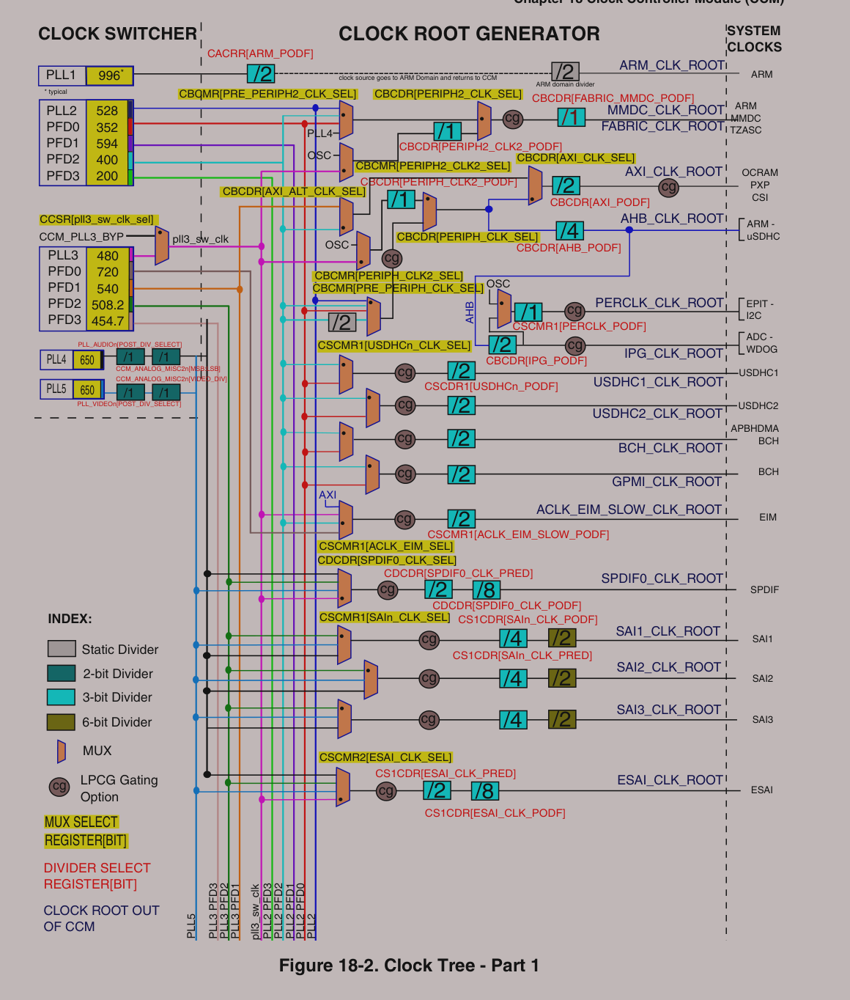
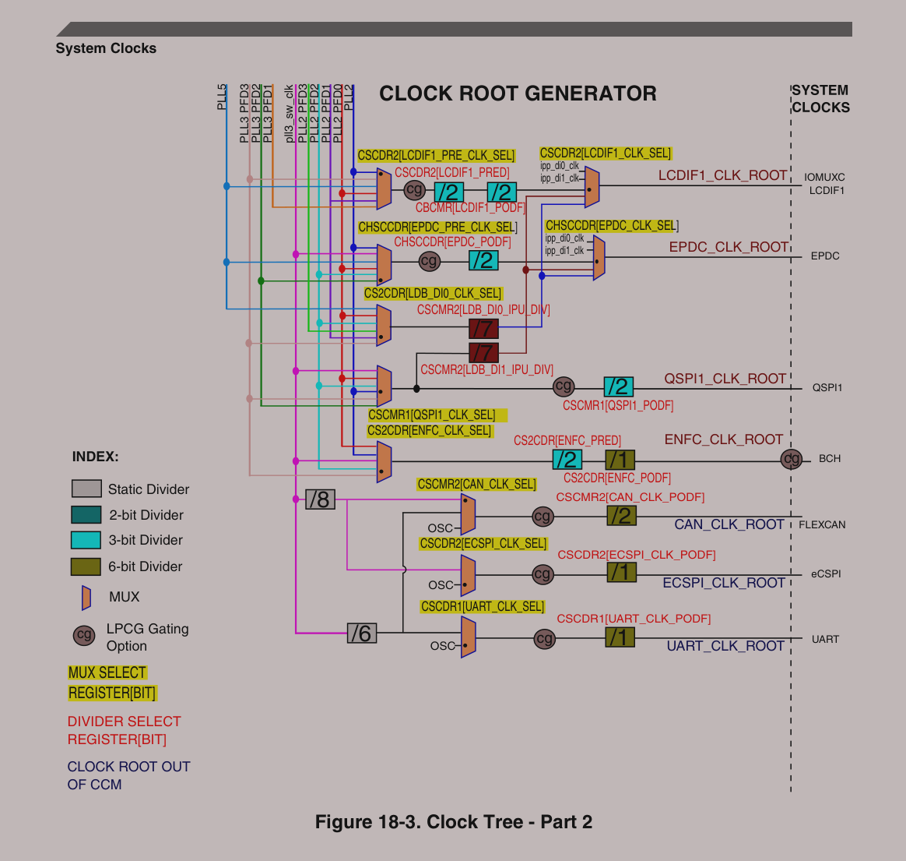
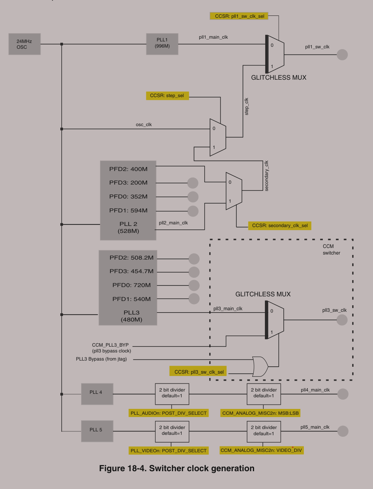

:::info
学习笔记记录，非教程。
:::
为了方便生成时钟，6从24MHz晶振生出来7路PLL。这7路PLL中有的又生出来PFD。
PLL1：ARM PLL供给ARM内核。PLL2：sysytem PLL，528MHz，528_PLL，此路PLL分出了4路PFD，分别为PLL2_PFD0~PFD3PLL3: USB1 PLL，480MHz 480_PLL，此路PLL分出了4路PFD，分别为PLL3_PFD0~PFD3。PLL4: Audio PLL，主供音频使用。PLL5: Video PLL，主供视频外设，比如RGB LCD接口，和图像处理有关的外设。PLL6：ENET PLL，主供网络外设。PLL7: USB2_PLL ,480MHz，无PFD。详见 IMX6ULL参考手册 Chapter 18 Clock Controller Module (CCM)
附 时钟树图：
t形为多路选择器


根据时钟树来设定系统主频。具体时钟配置的说明可以参见 IMX6ULL参考手册 18.5.1.5
CCM internal clock generation
下图为时钟切换器 （CCM_CLK_SWITCHER） 控制输出的示意图。

要设置ARM内核主频为528MHz，设置CACRR寄存器的ARM_PODF位为2分频，然后设置PLL1=1056MHz即可。CACRR的bit30为ARM_PODF位，可设置07，分别对应1~8分频。应该设置CACRR寄存器的ARM_PODF=1。
切换时钟源。PLL1输出为pll1_sw_clk。pll1_sw_clk有两路可以选择，分别为pll1_main_clk，和step_clk，通过CCSR寄存器的pll1_sw_clk_sel位(bit2)来选择。为0的时候选择pll1_main_clk，为1的时候选额step_clk。
在修改PLL1的时候，也就是设置系统时钟的时候需要给6ULL一个临时的时钟，也就是step_clk。在修改PLL1的时候需要将pll1_sw_clk切换到step_clk上。
设置step_clk。Step_clk也有两路来源，由CCSR的step_sel位(bit8)来设置，为0的时候设置step_clk为osc=24MHz。为1的时候不重要，不用。
时钟切换成功以后就可以修改PLL1的值。
通过CCM_ANALOG_PLL_ARM寄存器的DIV_SELECT位(bit6~0)来设置PLL1的频率，公式为：
Output = fref*DIV_SEL/2 1056=24*DIV_SEL/2=>DIEV_SEL=88。
设置CCM_ANALOG_PLL_ARM寄存器的DIV_SELECT位=88即可。PLL1=1056MHz
还要设置CCM_ANALOG_PLL_ARM寄存器的ENABLE位(bit13)为1，也就是使能输出。
在切换回PLL1之前，设置置CACRR寄存器的ARM_PODF=1！！切记。
PLL2和PLL3。PLL2固定为528MHz，PLL3固定为480MHz。
AHB_CLK_ROOT、PERCLK_CLK_ROOT以及IPG_CLK_ROOT。
因为PERCLK_CLK_ROOT和IPG_CLK_ROOT要用到AHB_CLK_ROOT，所以我们要初始化AHB_CLK_ROOT。
AHB_CLK_ROOT=132MHz。
设置CBCMR寄存器的PRE_PERIPH_CLK_SEL位，设置CBCDR寄存器的PERIPH_CLK_SEL位0。设置CBCDR寄存器的AHB_PODF位为2，也就是3分频，因此396/3=132MHz。
设置CBCDR寄存器IPG_PODF=1，也就是2分频。
设置CSCMR1寄存器的PERCLK_CLK_SEL位为0，表示PERCLK的时钟源为IPG。
【嵌入式Linux】i.MX6ULL 时钟树——理论分析-CSDN博客
CCM_ANALOG_PFD_528n 寄存器控制着 i.MX 6ULL 处理器中四个分数分频器的配置，包括时钟门控、稳定性状态和分数分频值。这些分频器用于生成不同频率的时钟信号，以满足各种外设的需求。
i.MX6U 芯片拥有多个 PLL（Phase-Locked Loop，锁相环）模块，用于生成各种频率的时钟信号，为芯片内部的不同模块和外设提供时钟源。下面整理了 i.MX6U 芯片的 7 个主要 PLL：
i.MX6U 芯片通过多个 PLL 模块，生成各种频率的时钟信号，为芯片内部的不同模块和外设提供时钟源。每个 PLL 的倍频和分频都可以根据需要进行配置，以满足不同外设的需求。
创建时间：8月 06, 2025
最后更新：8月 14, 2025
字数统计：1.7k字
预计阅读：6min